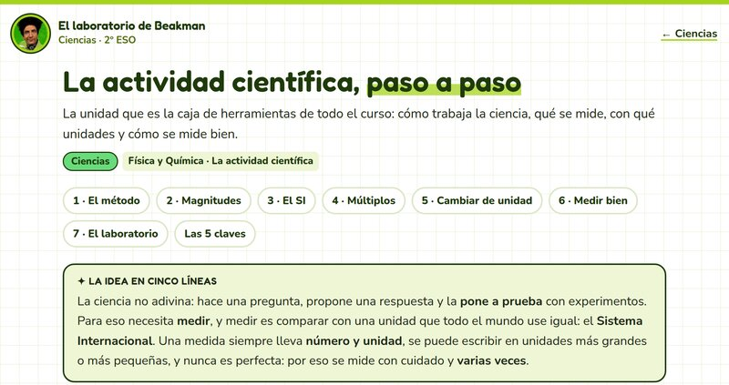
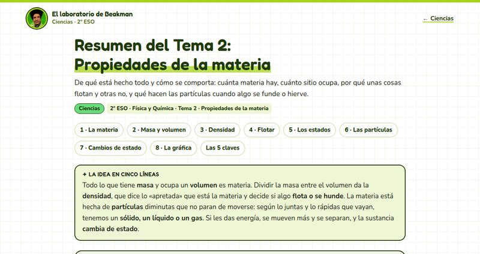
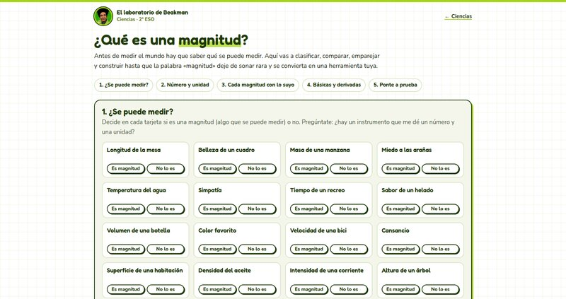
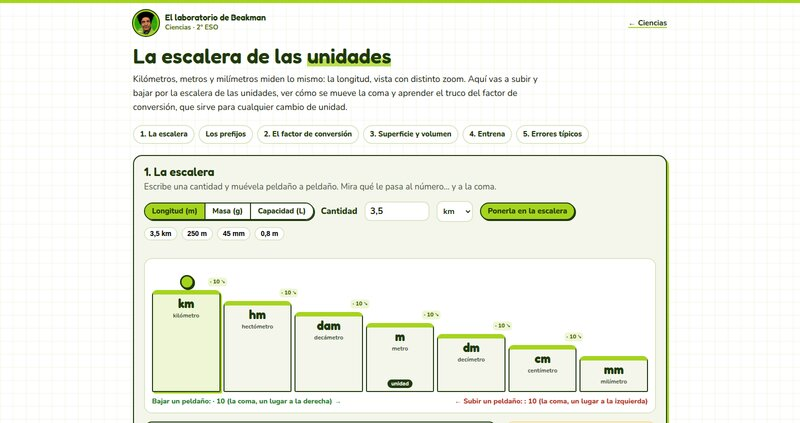
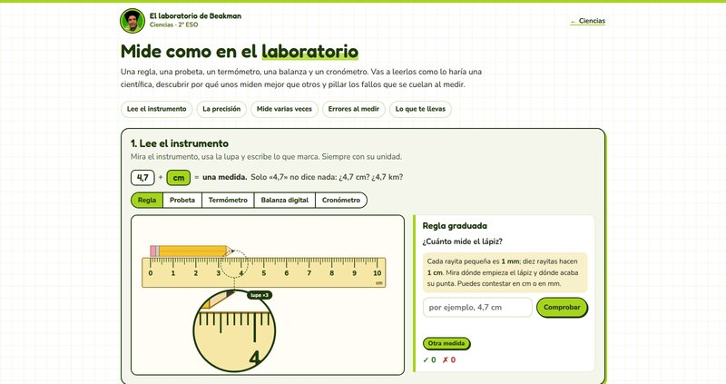
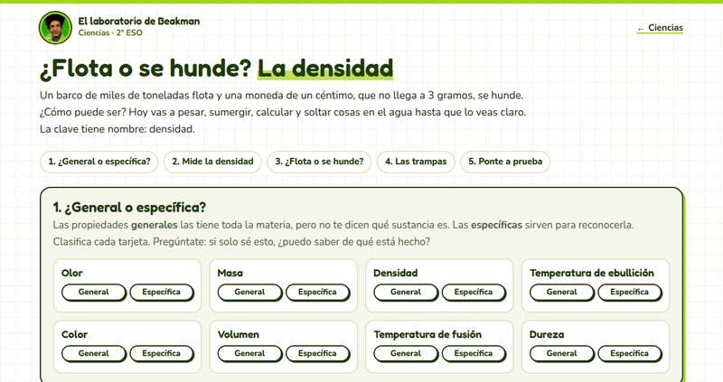
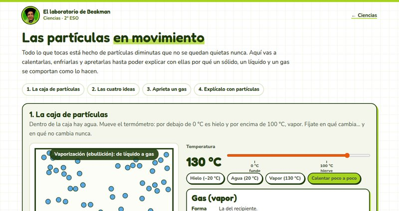
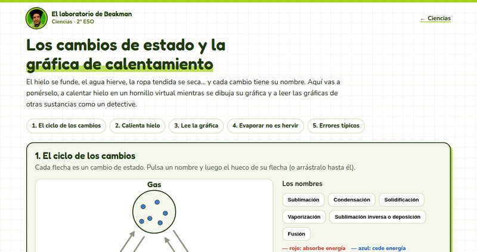

Ciencias
Mirar el mundo y preguntarle cosas.
Empieza por aquí: los resúmenes
Cada tema en una lectura, con lo esencial y el recurso para practicar cada parte. Léelo antes de ponerte con los recursos.

Resumen del Tema 1: La actividad científica
La unidad entera en una lectura: el método científico, las magnitudes, el Sistema Internacional, múltiplos y submúltiplos, el factor de conversión, medir bien y el laboratorio.

Resumen del Tema 2: Propiedades de la materia
La unidad entera en una lectura: masa, volumen y densidad, por qué algo flota, los tres estados, la teoría cinético-molecular, los cambios de estado y la gráfica de calentamiento.
Recursos para practicar
1º ESO
Todavía no hay recursos de 1º ESO. Están en el horno.
2º ESO
Tema 1 · La actividad científica

¿Qué es una magnitud?
Clasifica qué se puede medir y qué no, mira a escala por qué «5» no dice nada y «5 m» sí, empareja cada magnitud con su unidad, su símbolo y su instrumento, y construye las magnitudes derivadas con bloques.
- Para qué sirve
- Entender de verdad qué es una magnitud, por qué una medida siempre lleva número y unidad, qué son el Sistema Internacional y sus siete magnitudes básicas, y cómo salen de ellas la superficie, el volumen, la velocidad y la densidad.
- Cómo lo hace
- Hacer antes que leer: tarjetas con respuesta al momento, dibujos a escala, una tabla con las trampas típicas (Kg, seg, °K) explicadas y un constructor de recetas que enseña la unidad mientras la montas. Al final, diez preguntas y repetir solo las falladas.

La escalera de las unidades
Sube y baja la escalera de km a mm (y de las unidades de masa y de capacidad), mira cómo se mueve la coma en cada escalón y aprende el truco del factor de conversión, con las unidades tachándose ante tus ojos.
- Para qué sirve
- Cambiar de unidad sin miedo y sin memorizar: entender los múltiplos y submúltiplos, por qué cada escalón es un ×10 o un ÷10, y cómo funciona el factor de conversión, también con km/h y m/s.
- Cómo lo hace
- Una escalera animada que hace la cuenta en cada paso, ejemplos guiados del factor de conversión, superficie y volumen con cuadraditos y cubitos, y un generador de ejercicios con la corrección paso a paso.

Mide como en el laboratorio
Lee una regla, una probeta, un termómetro, una balanza y un cronómetro, compara la precisión de dos instrumentos, mide varias veces y haz la media, y caza los errores típicos al medir.
- Para qué sirve
- Saber medir bien: leer cada instrumento, escribir siempre número y unidad, entender qué es la precisión y por qué en ciencia se repite una medida y se hace la media.
- Cómo lo hace
- Instrumentos dibujados que cambian cada vez, corrección con margen de media división, un juego de reflejos para medir tiempos cinco veces y casos para descubrir qué ha hecho mal quien mide.
Tema 2 · Propiedades de la materia

¿Flota o se hunde? La densidad
Pesa objetos en una balanza, sumérgelos en una probeta y lee el menisco, calcula su densidad con las unidades bien escritas y suéltalos en agua, agua con sal, aceite o mercurio para ver si flotan. Y desmonta las trampas: el kilo de hierro y el de paja, y el barco de acero que flota.
- Para qué sirve
- Entender de verdad qué son la masa, el volumen y la densidad, por qué la densidad sirve para reconocer una sustancia y no cambia al partir el objeto, y por qué algo flota cuando es menos denso que el líquido.
- Cómo lo hace
- Hacer antes que leer: tarjetas con respuesta al momento, un laboratorio virtual que avisa de los errores típicos (el menisco, restar los volúmenes, dividir al revés), apostar antes de soltar cada objeto, dibujos a escala y un barco cuyo casco agrandas tú. Al final, diez preguntas y repetir solo las falladas.

Las partículas en movimiento
Calienta y enfría una caja de partículas y mira cómo pasan de vibrar a deslizarse y a volar, aprieta un gas en una jeringuilla contando sus choques contra el émbolo y explica con partículas la colonia, el colorante, la rueda de la bici o el vaso que suda.
- Para qué sirve
- Entender la teoría cinético-molecular y usarla para explicar cómo se comporta cada estado: por qué un gas se comprime y un líquido no, qué es la presión y por qué las partículas nunca cambian de tamaño ni se paran.
- Cómo lo hace
- Ver antes que leer: una simulación con termómetro, las cuatro ideas de la teoría conectadas cada una con algo que se ve en la caja y una jeringuilla con contador de choques y tabla para descubrir la ley de Boyle. Al final, diez situaciones de la vida diaria con el porqué de cada opción y repetir solo las falladas.

Los cambios de estado y la gráfica de calentamiento
Pon nombre a las seis flechas entre sólido, líquido y gas, calienta hielo en un hornillo virtual mientras se dibuja su gráfica en directo y lee las gráficas de otras sustancias para descubrir cuál es cada una.
- Para qué sirve
- Dominar los nombres de los cambios de estado y saber cuáles absorben o ceden energía, y leer e interpretar una gráfica de calentamiento y de enfriamiento: los tramos, las mesetas, por qué en ellas no sube la temperatura y qué dicen del punto de fusión y de ebullición.
- Cómo lo hace
- Hacer antes que leer: un triángulo para completar con respuesta al momento, un experimento con el vaso, el termómetro y una lupa de partículas junto a la gráfica, once gráficas con datos reales para leer (también una mezcla sin meseta) y la trampa del «humo» blanco de la olla.